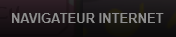
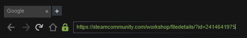
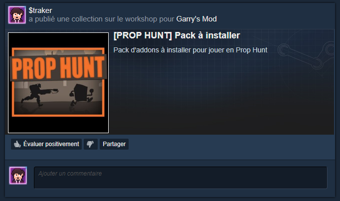
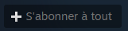
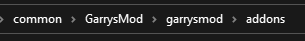
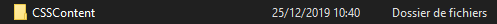

Installation des addons de la collection
Pour commencer, vous devez télécharger cette collection
Si vous n'êtes pas connecté sur Steam depuis votre navigateur internet, lancez un jeu au hasard
dans votre bibliothèque, faites SHIFT + TAB puis cliquez en bas sur Navigateur internet

Collez ensuite l'URL en haut de la petite fenêtre du navigateur internet intégré de Steam

Vous pouvez aussi aller dans l'onglet Activité sur Steam

Puis cliquer sur la collection

Une fois sur connecté, cliquez sur S'abonner à tout

Lancez votre jeu et tout devrait maintenant fonctionner
Installation du pack de sons custom du Weebs Krou
Pour commencer, vous devez télécharger ce fichier zip
Une fois télécharger rendez-vous dans votre bibliothèque Steam, faites un
clique droit sur Garry's Mod puis Gérer et Parcourir les fichiers locaux

Rendez vous ensuite dans le dossier garrysmod puis addons
Et glissez le dossier weeb_taunt du fichier zip dans le dossier des addons

Lancez votre jeu et tout devrait maintenant fonctionner
Installation des contents de Counter Strike Source (Optionnel)
Si vous n'avez pas le jeu Counter Strike Source vous aurez des bugs sur certaines maps, tel que Office dans la collection
Avoir ces contents est facultatif mais très conseillé, suivez ces étapes si vous les voulez
Pour commencer, vous devez télécharger ce fichier zip
Une fois télécharger rendez-vous dans votre bibliothèque Steam, faites un
clique droit sur Garry's Mod puis Gérer et Parcourir les fichiers locaux
Rendez vous ensuite dans le dossier garrysmod puis addons
Et glissez le dossier CSSContent du fichier zip dans le dossier des addons

(Mon dossier a un nom différent car j'ai le jeu Counter Strike Source sur Steam légalement)
Lancez votre jeu et tout devrait maintenant fonctionner
Retour à l'accueil